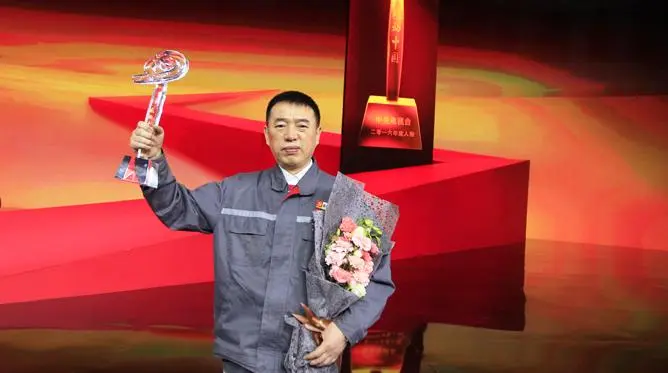

-
-
人物介绍：
李万君，男，汉族，1968年出生，中共党员，1987年7月，毕业于长春客车厂职业高中，而后进入客车厂焊接车间工作。现任中车长客股份公司高级技师。
所得荣誉:
2017年5月29日，在吉林省第十一次党代表大会选举选举为吉林省出席党的十九大代表。 2019年3月，获得“大国工匠2018年度人物”。
-
全国五一劳动奖章获得者并代表全国1600多名获得者宣读倡议书、中华技能大奖、国务院特殊津贴获得者、全国技能大师工作室国家给予启动资金10万元、吉林省首席、吉林省高级专家、吉林省技能传承师、吉林省第十次党代会代表。2005年，被国务院国资委授予“中央企业技术能手”称号。
2006年，被国务院国资委授予“中央企业知识型先进职工”称号；2007年，被中国北车授予“中国北车金蓝领”称号；2008年，被中国北车授予“中国北车拔尖技术能手”称号；2008年，获得人力资源和社会保障部颁发的“全国技术能手”荣誉称号等。2009年，被中华全国铁路总工会授予“火车头奖章”；2009年，被中国北车授予“中国北车技术标兵”称号；2016年7月被中组部授予“全国优秀共产党员”荣誉称号。2017年2月8日，获得“感动中国2016年度人物”十大人物。2019年1月18日，当选2018年“大国工匠年度人物”。 2021年9月，被授予第四届中国质量奖提名奖。
-
2007年，“和谐号”动车组在中车长客试制生产。转向架环口处的焊接是承载车体重量的关键受力点。李万君反复研究摸索，总结出“环口焊接七步操作法”，成功突破国外技术封锁，保证了动车组转向架的批量生产。2017年，他带领团队成功攻克我国自主知识产权“复兴号”转向架的多项难题，助推中国高铁不断领先领跑。
2010年至今，他在企业内培训焊工2万多人次，考取各种国际国内焊工资质6000多项，满足中国高铁快速发展需求。手握一把焊枪，他坚守在高铁焊接生产一线35年，总结并制定了30多种转向架焊接操作方法，技术攻关150多项，37项获得国家专利，代表了中国轨道车辆转向架构架焊接的世界最高水平。他先后荣获“中华技能大奖”“全国劳动模范”“全国优秀共产党员”“大国工匠”等荣誉，当选党的十八大、十九大代表，被誉为“工人院士”“高铁焊接大师”。
李万君说：“作为一个高铁焊工，就要用智慧和技能把手中的产品不断升华，最后达到极致，变为艺术品，这就是‘工匠精神’。” “技能报国”是他终生夙愿，“大国工匠”是他至尊荣光。他从一名普通焊工成长为中国高铁焊接专家，是“中国第一代高铁工人”中的杰出代表，是高铁战线的“杰出工匠”，被誉为“工人院士”、“高铁焊接"。
-